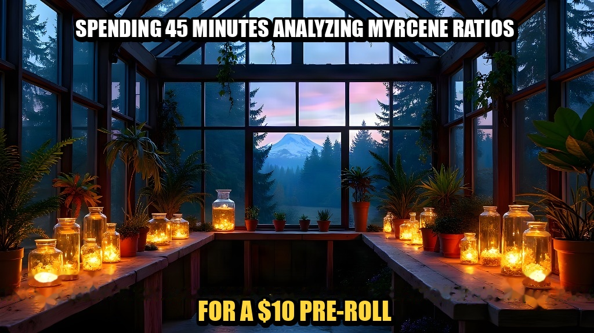
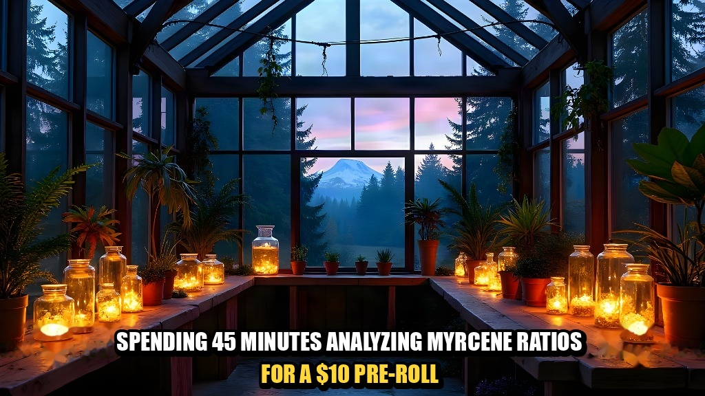
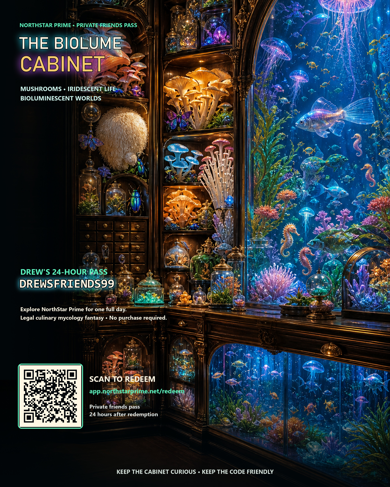

Natural Negative Space.
Zero Text Boxes.
True full-bleed perspective. Hand-crafted typography floating cleanly on raw stone and rafters without boxes, gradient bars, or visual occlusions.
Available as Museum Archival Prints (18×24", $32.00), Heavyweight Vintage Tees ($40.00), and Die-Cut Vinyl Stickers ($5.00).
Print-to-order disclosure: Printed to order on museum-grade 230gsm archival matte paper. Final price, shipping, and estimated delivery confirmed before payment.

Myrcene Terpene Analysis — Top/Bottom Standard
“Spending 45 minutes analyzing myrcene ratios / For a $10 pre-roll”
Zero text boxes. Natural negative space floating typography over twilight greenhouse rafters and slate walkway. 100% full-bleed perspective intact.
Format: ZERO-BOX FLOATING TYPOGRAPHY | Resolution: 5333×3000px @ 300 DPI

Myrcene Terpene Analysis — Bottom Floating Variant
“Multi-line text floating organically on foreground slate floor”
Zero text boxes. High-contrast stroke typography resting directly on stone floor texture with zero box or gradient occlusions.
Format: ZERO-BOX FLOATING TYPOGRAPHY | Resolution: 5333×3000px @ 300 DPI

Biolume Apothecary Messenger
“Exobiolume living-light apothecary master edition”
True 300 DPI speculative biology archival fine-art print. High-resolution glowing amber lanterns and mystical flora.
Format: ZERO-BOX FLOATING TYPOGRAPHY | Resolution: 2400×3000px @ 300 DPI